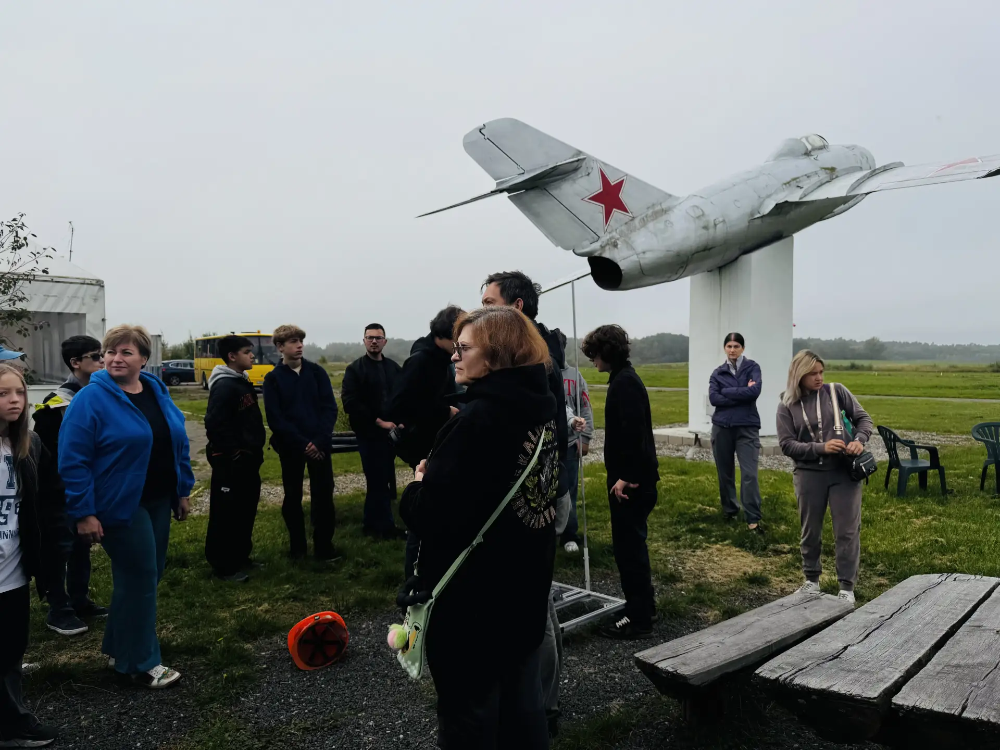
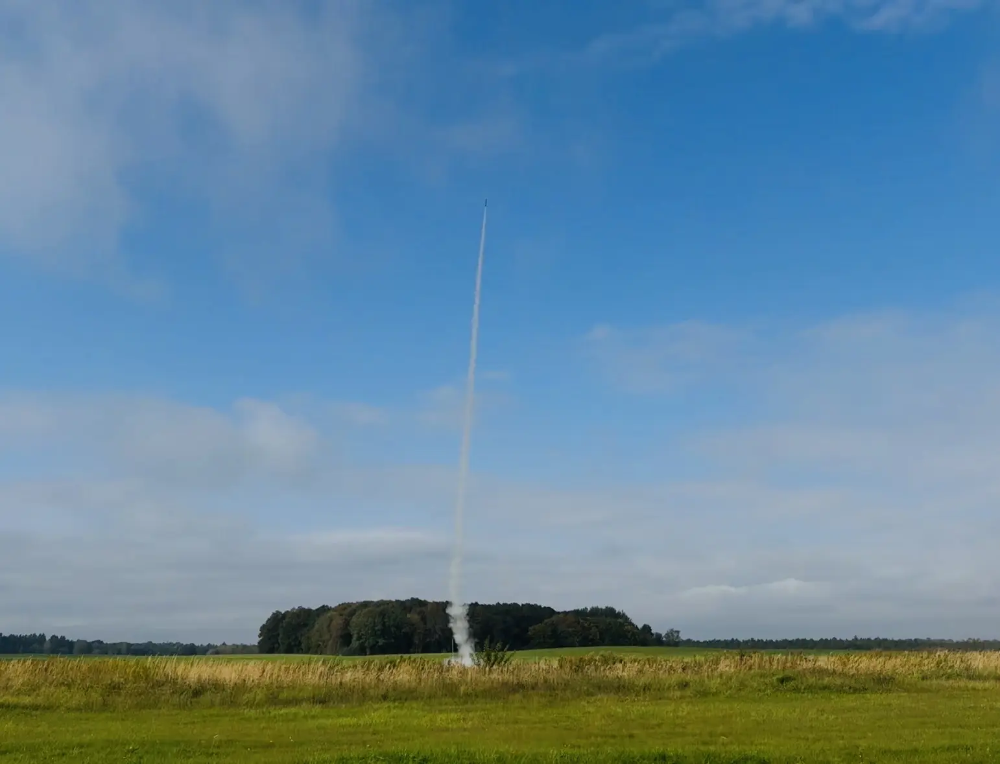
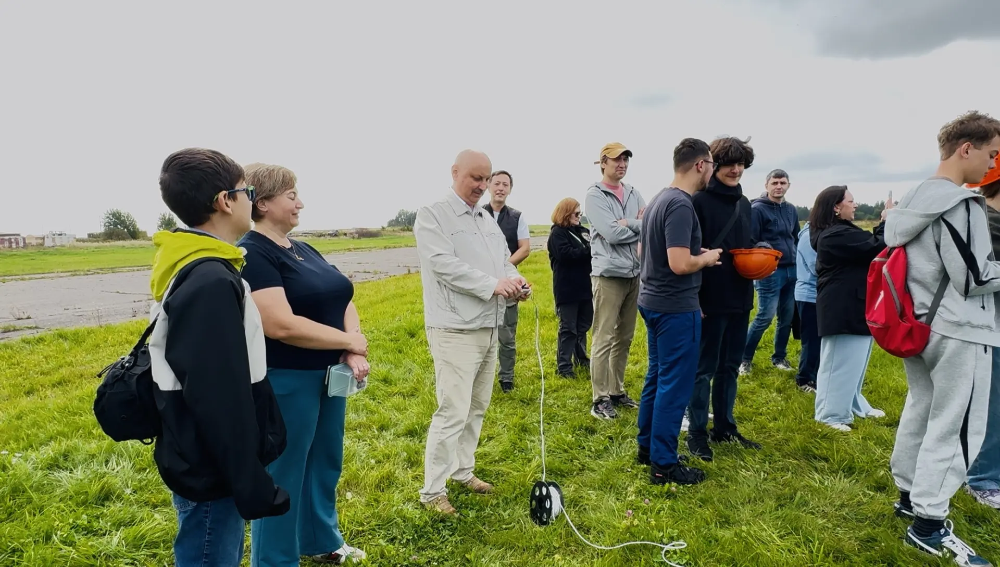
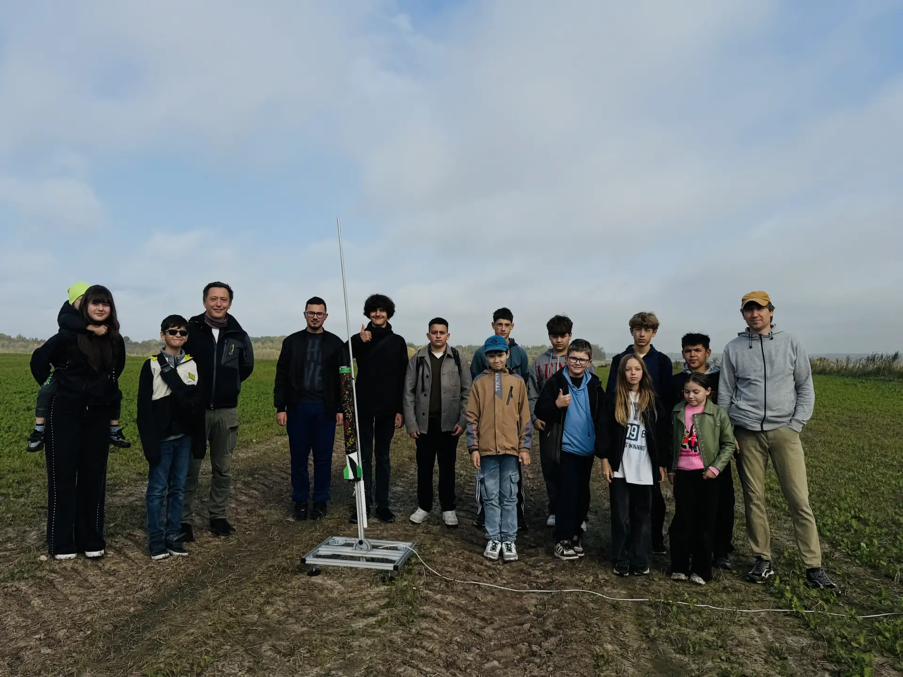
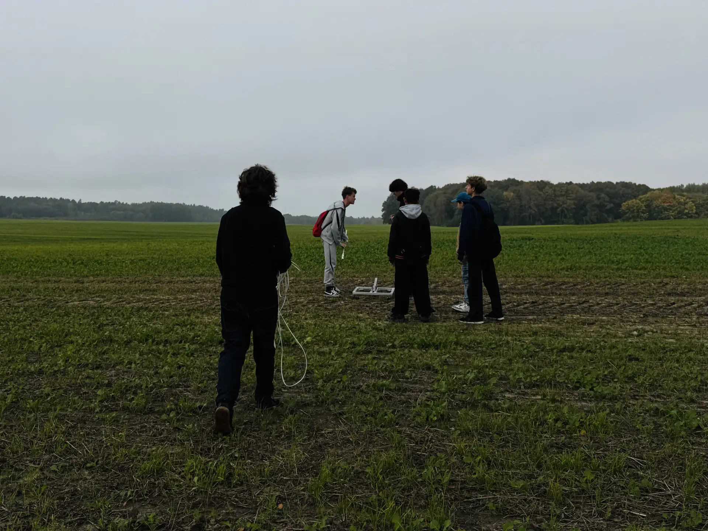
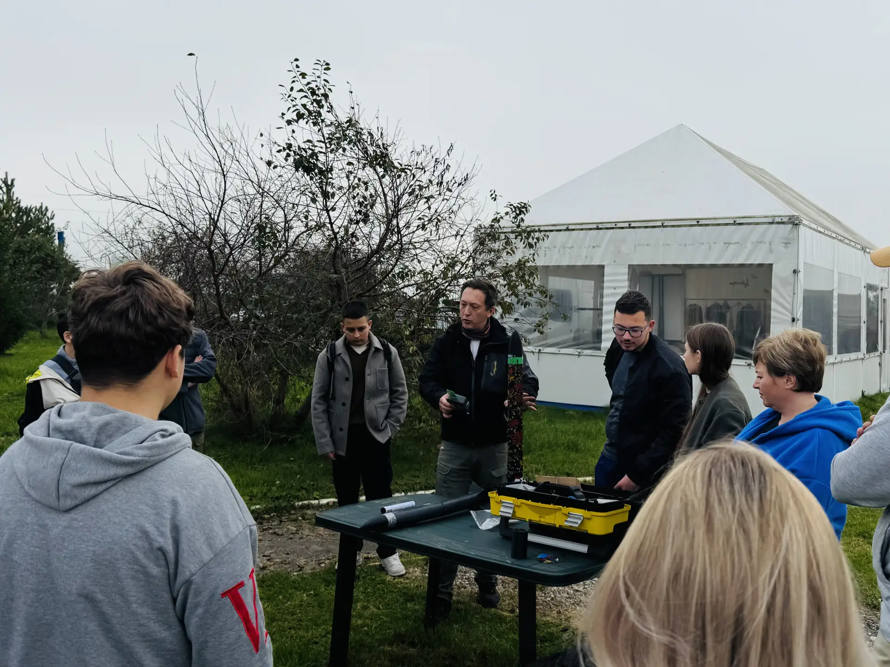
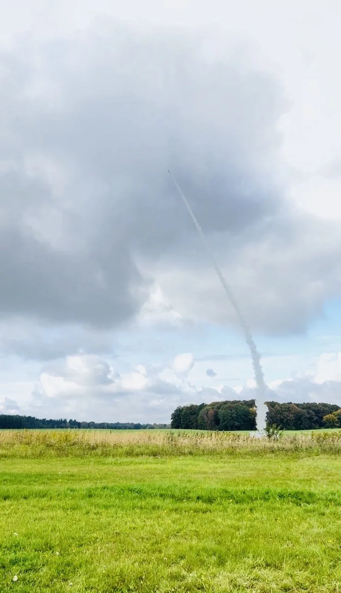

3 октября «Школа будущего» торжественно открыла школьное конструкторское бюро «Гефест». 💫
Открытие проводилось на аэродроме пос. Борское под руководством директора школы А.В. Голубицкого. ✨ Перед началом запуска ракет с участниками ракетостроительного движения провели инструктаж по технике безопасности и продемонстрировали ребятам устройство запускаемых ракет.
Зрелищные запуски ракет, от которых у всех присутствующих буквально захватывало дух. Первая твердотопливная ракета стремительно взмыла ввысь, оставив за собой эффектный шлейф, и покорила высоту в 366 метров. 🌌 Вторая ракета «Фотон» в воздухе подтвердила высокое качество сборки и точность расчётов. 📈 Ребята своими глазами увидели, как плоды инженерной мысли преодолевают земное притяжение.
Кульминацией праздника для ребят стала возможность самим подняться в воздух и полетать на сверхлёгком воздушном судне «Икарус». 🛩️
Незабываемое чувство полёта, бескрайнее небо и вид на землю с высоты птичьего полёта оставили в сердцах будущих конструкторов неизгладимые впечатления! ☁️
Организаторы и участники конструкторского бюро выражают особую благодарность директору «Школы будущего» Алексею Викторовичу Голубицкому, а также руководству и команде аэродрома за предоставленную площадку, всестороннюю поддержку и веру в потенциал молодого поколения!
Спасибо всем, кто принял участие в создании этого праздника науки и технологий 🙏❤️
Конструкторское бюро «Гефест» официально открыто. Впереди — новые чертежи, сборки и ещё более высокие горизонты! Поехали! 🚀🌍



